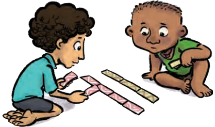
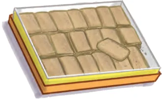

Anshu and Guna make torans out of strips of cloth. Multiple strips are placed one next to another to make a toran. Anshu uses strips of length 6 cm and Guna uses strips of 8 cm length. If both have to make torans of the same length, what is the smallest possible length, the torans could be? What is the length of the shortest toran that they can both make? Anshu uses cloth strips of 6 cm each. Any toran he makes will be a multiple of 6. So, the length of the toran could be 6, 12, 18, 24, 30, 36, 42, 48, 54 cm, and so on. Similarly, any toran Guna makes should be a multiple of 8. So, the length of the toran he makes could be 8, 16, 24, 32, 40, 48, 56, 64, 72 cm, and so on. From this, we can see that if both have to make torans of the same length, the length of the toran should be a common multiple of 6 and 8. From the two lists, we can see that 24 and 48 are two of the common multiples of 6 and 8. So, 24 cm and 48 cm are lengths of toran that Anshu and Guna can both stitch. 24 is the smallest among them. So, 24 cm is the length of the shortest toran that both can stitch. 24 is the lowest number among all the common multiples of 6 and 8. What about the largest common multiple? Does such a number exist? A sweet shop gives out free gajak to school children on Mondays. Today is a Monday and Kabamai enjoyed eating the gajak. But she visits the sweet shop once every 10 days. When is the next time she would be able to get free gajak from Sweet shop? (Answer in


Gajak is a sweet made from number of days.) sesame seeds, jaggery and ghee
Since the shop gives free sweets every Monday, it will give free sweets again after 7, 14, 21, 28, 35, 42, 49, 56, 63, 70, 77, ... days.
These are multiples of 7.
Kabamai will arrive at the sweet shop again after
10, 20, 30, 40, 50, 60, 70, ... days.
These are multiples of 10. When will Kabamai eat free sweets again? It will happen on days common to the sequences of multiples above. It can be seen that this will first happen after 70 days. Notice that, here too, 70 is the lowest among all the common multiples of 7 and 10. For both these problems the solution was the lowest common multiple. The Lowest Common Multiple (LCM) of two or more given numbers is the lowest (or smallest or least) of their common multiples. Do you remember the ‘Idli-Vada’ game from Grade 6 (see chapter ‘Prime Time’)? Two numbers are chosen and whenever players come to their multiples, ‘idli’ or ‘vada’ should be called out depending on whose multiple the number is. If the number happens to be a common multiple, then ‘idli-vada’ should be called out. In each problem below, the two numbers corresponding to ‘idli’ and ‘vada’ are given. Find the first number for which ‘idli-vada’ will be called out:
- (a)4 and 6 (b) 7 and 11
- (c)14 and 30 (d) 15 and 55
Is the answer always the LCM of the two numbers? Explain.
As in the case of the HCF, the process of finding the LCM by listing down the multiples may get tedious for larger numbers, as you would have seen for questions (c) and (d) above. Prime factorisation can simplify the process of finding the LCM as well. How do we find the LCM of two numbers using their prime factors?